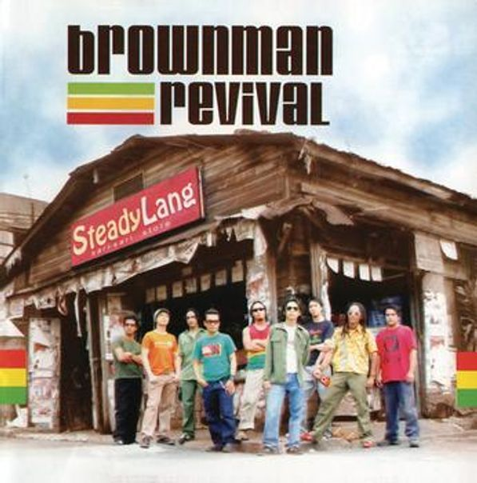

Lyrically


Lintik
Singer: Brownman Revival
Click To Play Music

Uno, dos, tres, kwatro
CHORUS
Lintik na pag-ibig
Parang kidlat
Puso kong tahimik na naghihintay
Bigla mong ginulat
'Di ko man lang napansin ang iyong pagdating
Daig mo pa ang isang bagyong namuo sa malayo
Ihip ng hangin biglang nag-iba
Sinundan pa ng kulog at kidlat
Sa biglang buhos ng iyo sa akin
Ako'y napakanta
(Repeat CHORUS twice)
Mga halik mo't mga lambing, inuulan mo sa akin
Binabaha, binabagyo na ako ng iyong mga cariño
Nananaginip ba ako nang gising
Ay, tinamaan ng magaling
Nadali mo ang puso ko ng iyong kidlat
(Repeat CHORUS twice)
AD LIB
Lintik, lintik, woh woh woh
Parang kidlat
(Repeat 2nd Stanza)
(Repeat CHORUS twice)
Lintik, lintik, woh woh woh
Parang kidlatk